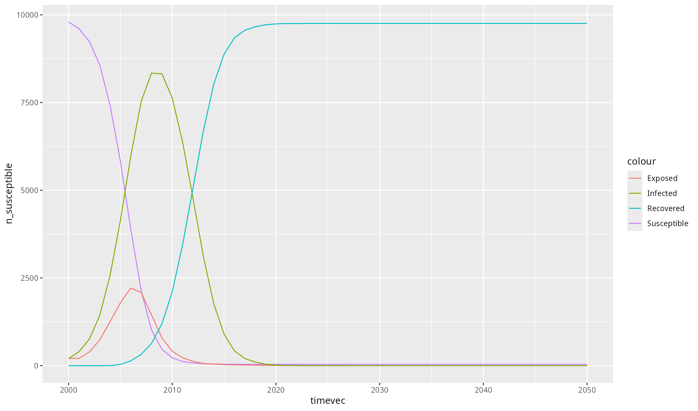

This example illustrates how to creating a custom disease module. It is a translation of Starsim’s Diseases developer tutorial to R.
# Pull out the commands for generating the plots
library(starsim)
load_starsim()
# Create a new class for an SEIR disease
SEIR <- PyClass("SEIR",
inherit = ss$SIR, # Inherit from the SIR class
defs = list(`__module__` = "SEIR",
# Define the __init__ method
`__init__` = function(self, pars = py_none(), ...) {
ss$SIR$`__init__`(self) # Call the parent init method
# Parameters specific to SEIR: duration of exposure
self$define_pars(
dur_exp = ss$lognorm_ex(0.5), # Define an explicit ("ex") lognormal distribution with a mean of 0.5
)
self$update_pars(pars, ...)
# Additional states beyond the SIR ones
self$define_states(
ss$State('exposed', label='Exposed'),
ss$FloatArr('ti_exposed', label='TIme of exposure'),
)
return(py_none())
},
# Make all the updates from the SEIR model
step_state = function(self) {
ss$SIR$step_state(self) # Perform SIR updates
# Additional updates: progress exposed -> infected
infected <- self$exposed & (self$ti_infected <= self$ti) # Check who is scheduled to become infected
self$exposed[infected] = FALSE
self$infected[infected] = TRUE
return(py_none())
},
# Ensure that exposed is set to False for people who die
step_die = function(self, uids) {
ss$SIR$step_die(self, uids) # Perform SIR updates
self$exposed[uids] = FALSE
return(py_none())
},
# Carry out state changes associated with infection
set_prognoses = function(self, uids, sources = py_none()) {
ss$SIR$set_prognoses(self, uids, sources) # Perform SIR updates
# Define handling of exposure
ti <- self$ti # Current module time index
self$susceptible[uids] = FALSE # People exposed are no longer susceptible
self$exposed[uids] = TRUE # But they are exposed
self$ti_exposed[uids] = ti # Track what time they got infected
# Calculate and schedule future outcomes
dur_exp <- self$pars['dur_exp']$rvs(uids) # Get random numbers for the duration of exposure
self$ti_infected[uids] <- ti + dur_exp # Set the time at which people move from exposed to infected
dur_inf <- self$pars['dur_inf']$rvs(uids) # Set the duration of infection
will_die <- self$pars['p_death']$rvs(uids) # Choose who will die
self$ti_recovered[uids[!will_die]] <- ti + dur_inf[!will_die] # Schedule people to recover
self$ti_dead[uids[will_die]] <- ti + dur_inf[will_die] # Schedule people to die
# Update result count of new infections
self$results['new_infections'][self$ti] = length(uids) # Store the number of new infections in the results
return(py_none())
},
# Plot results using ggplot
plot = function(self) {
library(ggplot2)
df <- self$results$to_df() # Export results to an R data.frame
fig <- ggplot(df, aes(timevec)) +
geom_line(aes(y = n_susceptible, colour = "Susceptible")) +
geom_line(aes(y = n_exposed, colour = "Exposed")) +
geom_line(aes(y = n_infected, colour = "Infected")) +
geom_line(aes(y = n_recovered, colour = "Recovered"))
print(fig)
return(fig)
}
)
)
# Run and plot
seir <- SEIR() # Create the disease module
sim <- ss$Sim(diseases=seir, networks='random') # Create a simple sim with default parameters
sim$run() # Run
sim$diseases$seir$plot() # Call the custom ggplot function